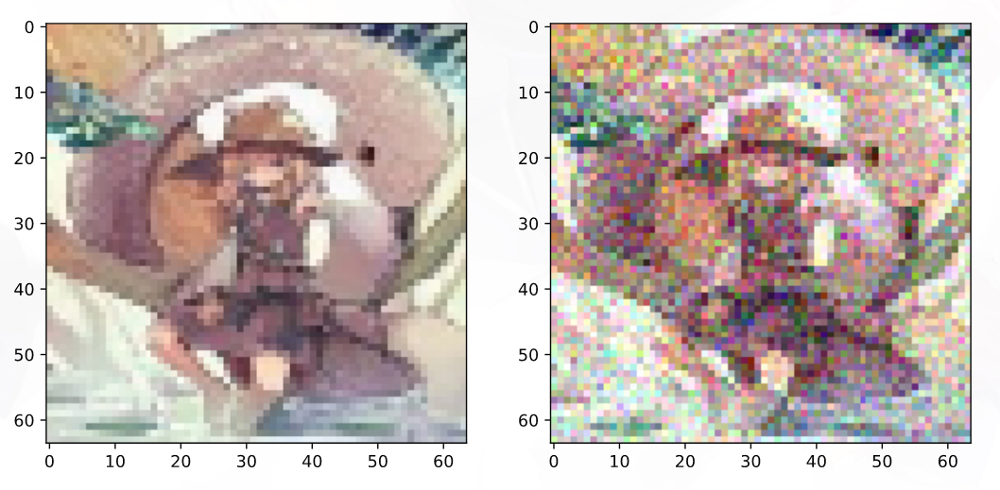
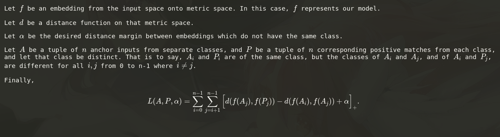
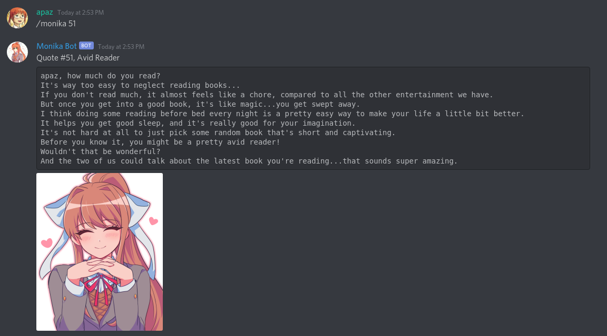

My name is Aaron Pazdera, I'm an honors student at UW-Stout, and I spend a considerable amount of time programming. Often this is related to various hobbies, but I also have a tendency to take a dive over the deep end into the hardest problems I can find. Here is a list of my projects. Feel free to ask me any questions.
https://github.com/larissaford/PIC-Math-MSCS-390-001
Going into the summer, my internship prospects had been shattered by Covid. Many of my friends had their internships cancelled as well. I myself had multiple interviews lined up, all of which were called off. This was particularly unfortunate because UW-Stout requires an internship for graduation. Fortunately, John Stinespring of the University of Tampa was looking for some students to do research. A deal was struck, research for internship requirement, and a team of six of us got to work.
By coincidence, the way that we worked together ended up being very similar to a scrum team. We had a meeting at the beginning of the day where we talked about what we were doing, where we were at, and what needed to be done, updating our list of tasks. Then we split off to do our work and collaborated with each other, usually in groups of 2-3 on the theoretical and math intensive parts.
In the end, we were successful at our task. Essentially, the task was to figure out a way to approximate the solution to a specific system of differential equations with only half the information that would be required for doing so algebraically. We figured out a good algorithm that converges on the right answer. We were in the middle of proving that it would always apply and always give the right answers for these types of problems no matter how the base equations were modified, but then the summer ended.
Our solution ended up involving a series of simulations that get progressively more and more accurate, as pictured above. Each line is a lot like dropping a leaf into a river and seeing where it goes. The system of equations describes the river and how its flow changes over time, and we're trying to figure out where to put the leaf.
Images courtesy of http://www.hackerfactor.com/blog/index.php?/archives/432-Looks-Like-It.html
https://github.com/apaz-cli/Open-Image-Hashing-Tools
A hash function takes some sort of input data and maps it onto a fixed number of bits. If two peices of data have the same hash, there's a high chance that they're duplicates.
Hash algorithms have for a long time been relevant in cryptography and networking. If the hash of a message is attached to the end of the message, the recipient can simply re-hash and compare to verify the integrity of the message. If there's even one bot flipped, then the recipient will know. But, what if you want a hash function that's resilient to small changes in the input?
Very often, small transmission errors should be overlooked because an image was transfered using a network protocol that doesn't validate messages. Other times, you have a .png image and a .jpg image that are clearly visually identical, but a cryptographic hash function would call them completely different images because of one or two almost imperceptible jpg compression artifacts. A perceptual hash function generates a hash based on "what the image looks like" rather than a cryptographic mangling of bits. The images above describe the process for the simplest such algorithm, aHash.
This is actually a rather difficult and interesting problem, which has led me to many places, from image and signal processing to computational geometry and deep learning. All because I wanted to remove duplicate images from a folder. I ended up eventually doing that, but I also built a framework so that anyone can create their own system to efficiently hash, store, and compare hashes, and to build and benchmark image hashing algorithms. It was a bit overkill, but a whole lot of fun.
It took a long time because I built the entire system from scratch. I couldn't find an image library that could do pixel comparisons fast enough, so I built my own. I couldn't find an implementation of a VP-Tree (computational geometry data structure for fast nearest-neighbor lookup) that I liked, so I built my own. I read all the original papers and implemented the algorithms from scratch. It's my passion project, and I've put a lot of time into it.
 
https://github.com/apaz-cli/ML-ImageHash
After a while, I began to think that conventional image hashing algorithms are great, but there's got to be a better way. I spent a long time thinking deeply about what was important to what an image "looked like" and the ways each algorithm did and didn't distill the "essence," whatever that means, of an image. Eventually I realized that this would be a perfect application of machine learning. Simply construct the system in such a way that the computer is the one who has to answer these questions, not me.
Another great benefit is that if you want the resulting hash function to be invariant to something, such as noise, rotation, scaling, etc, all you have to do is design a loss function that sets the distance between the resulting hashes to zero. So that's what I did. The architecture that I settled on was a convolutional autoencoder with a variation on triplet margin loss.
This is still somewhat of a work in progress, because I'm still messing around with loss functions and trying to design one that's even better. However, it works, and I'm soon going to hook my machine learning image hash function into my image hashing framework. It'll be free for any developer to use.
https://github.com/apaz-cli/Safebooru-Scraper
Deep learning takes a very large dataset to pull off. I needed a dataset. So I wrote a program that downloads millions of images off of Safebooru.org. I ran it, downloaded all the images, and used them to benchmark various perceptual image hashing algorithms. I also used the images as training/validation datasets for the deep learning image hash.
The next big issue that I found myself running into is download times. Even downloading the dataset at a rate of ten image thumbnails per second, it still took 3-4 days to download the whole thing. Once the download was complete, I was dismayed to learn that simply loading all the downscaled 64x64 images into memory from my external hard drive takes over sixteen hours. To train my deep learning model a single time, I have to do that somewhere between twenty to fifty times. So, a minimum of 13.3 days. SSD speeds are much faster, but I have limited storage. I'm currently in negotiations to get some better hardware and a video card to train on so that I can train a much larger and deeper network.
https://github.com/apaz-cli/Brainfuck-Tools
This is Hello World in brainfuck:
++++++++++[>+++++++>++++++++++>+++>+<<<<-]
>++.>+.+++++++..+++.>++.<<+++++++++++++++.
>.+++.------.--------.>+.>.
Brainfuck is an intentionally confusing programming language, aptly named for the experience of writing and debugging its code. It was not created to be useful, but to challenge, amuse, and punish programmers. Despite the mind bending complexity of BF programs, the language itself is quite simple.
Building a compiler for a conventional programming language is very difficult. It's a relatively straightforward task in the same way as the twelve labours of Heracles. Writing an abstract syntax tree parser, a necessary part of most compilers, feels very much like trying to slay the Nemean lion.
Fortunately though, writing a Brainfuck interpreter is relatively easy. So I did. Then I also wrote a compiler for it that transpiles Brainfuck to C code, then tells a C compiler to compile the generated code to produce a binary. Every programming language is in a (loose) sense just C in disguise, and BF is no exception.
Tecnical Side Note:
For a long time, I've been interested in compiler theory, and creating my own programming language. After all, most features of higher level languages than C are just C design patterns in disguise. What is an object but a struct with associated functions? That's a C design pattern. So is inheritance. So are interfaces, lambda expressions, monadic functors, and closures. People write object-oriented C code all the time without knowing it.
It turns out that basically all features of modern programming languages can be defined either in terms of other simpler language features, or in C language features. For example, a lambda expression is just an "object," as defined above, implementing a "functional interface" (which is really just a generated sequence of macros), and containing a function pointer. Maybe someday, I too will follow in the footsteps of Heracles and build a true proramming language from the ground up. But, this is a decent start that will satiate me for now.

https://github.com/apaz-cli/RootwallaBot
RootwallaBot is a Discord bot that does hypergeometric probability/distribution, and graphs the results. It's particularly useful to people who play a lot of trading card games such as Magic: the Gathering or Yugioh.
While building a deck, you may think to yourself: If my 60 card deck contains 24 lands, what are the chances that I draw between 2 to 4 of them in my opening hand of 7 cards? You can see the graph of expected frequency above, along with mean and standard deviation. The command pictured above graphs relative frequency, but the /prob command will tell you that the probability is roughly 77.46%.

https://github.com/apaz-cli/MonikaBot
MonikaBot is another Discord bot. This one just posts quotes and images of the character Monika from the game Doki Doki Literature Club. It also has some administrative features built into it.
I'm running both the Monika and Rootwalla bots from a Raspberry Pi in my dorm room. MonikaBot was created for a college club and gets some use from time to time. RootwallaBot was created for a Magic the Gathering Discord server and serves roughly 200 daily users.
Also this website is a project too, I guess. If you want to call it that. Thanks for scrolling this far.
--Aaron Pazdera